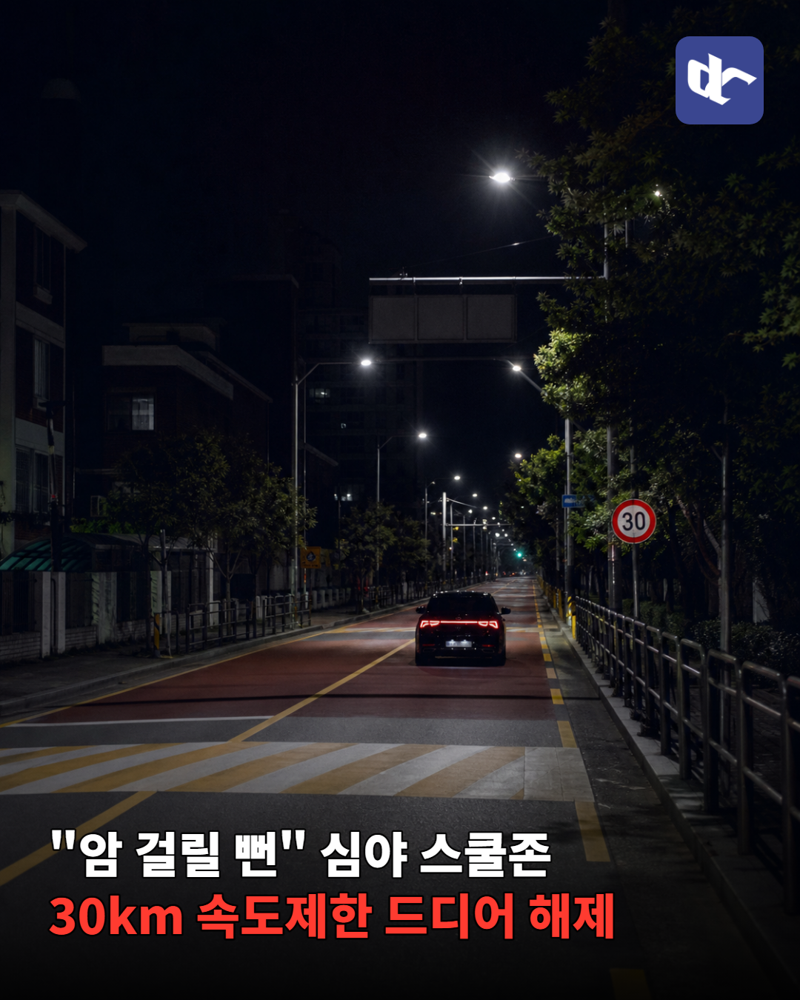
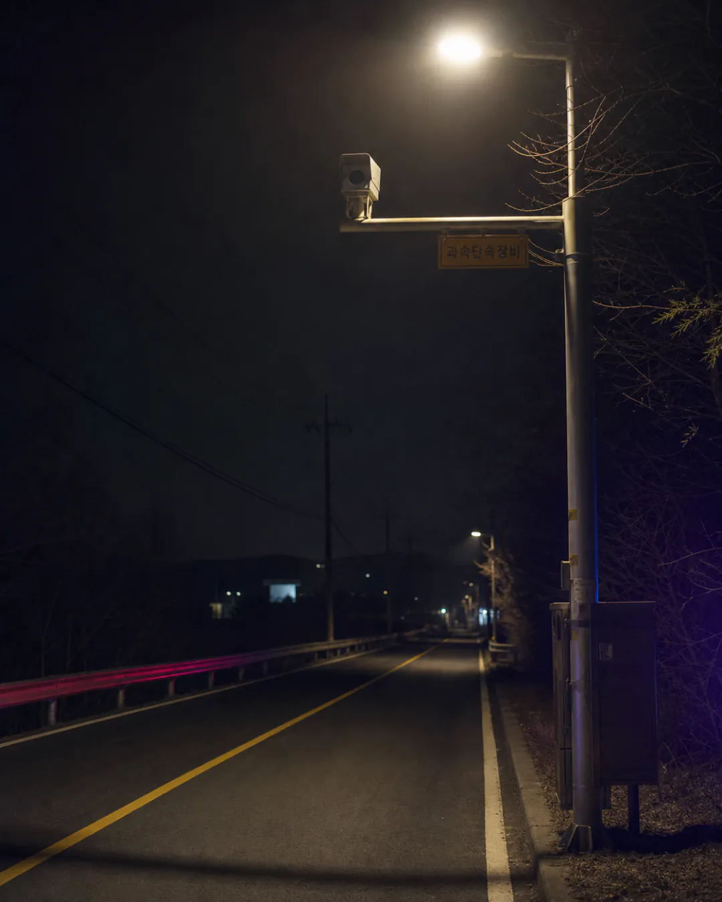
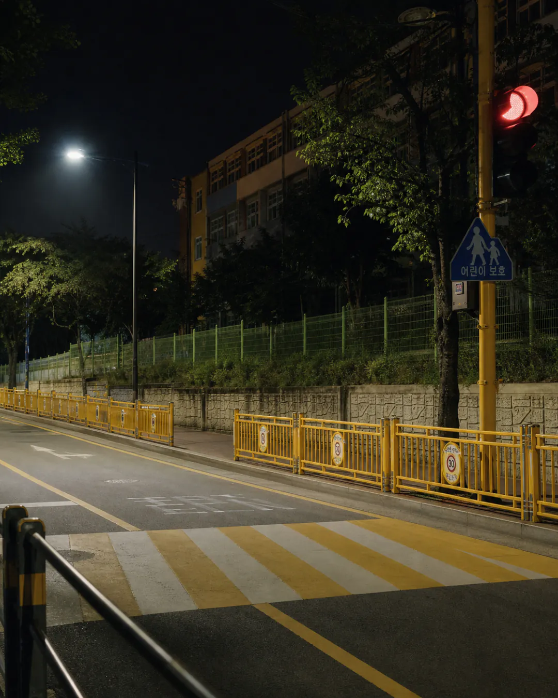
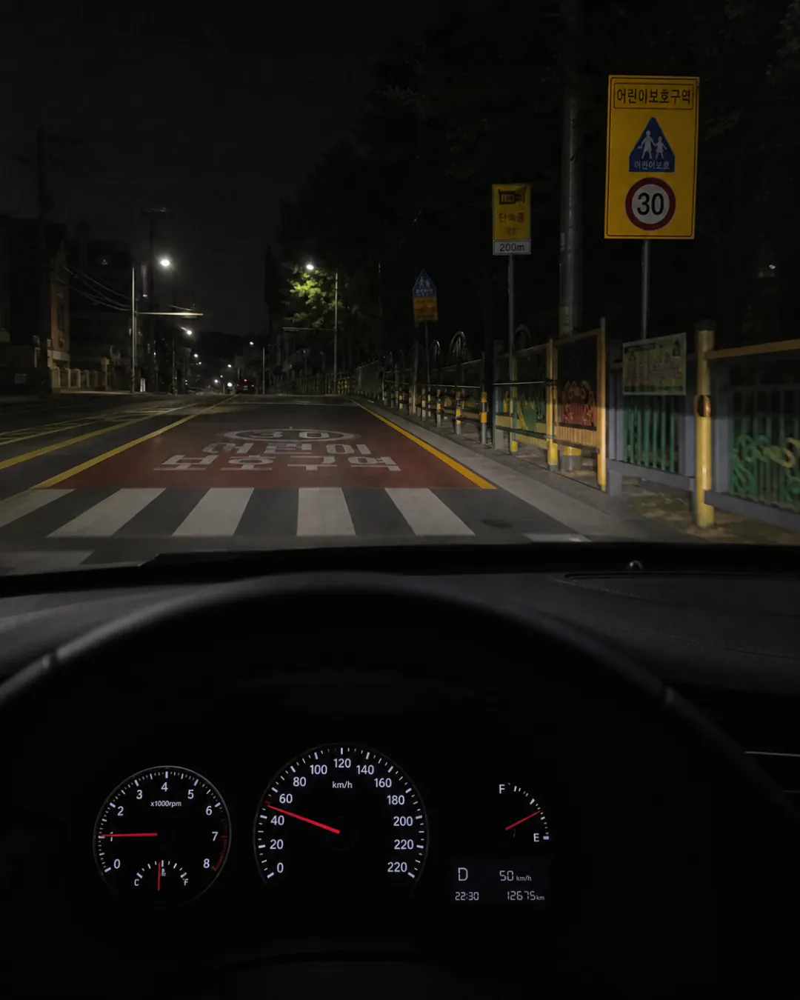

새벽에 텅 빈 스쿨존에서 30km 밟던 답답함 드디어 끝남
경찰청이 심야 스쿨존 속도제한 푸는 거 대폭 확대함

지금까지 전국 1만 5천 곳 중에 84곳만 풀려있었음 ㅋㅋㅋ
그래서 0시부터 6시까지 사고 없는 곳 위주로 기준 확 낮춤

이제 편도 1차로도 방호울타리 같은 거 있으면 속도 올릴 수 있음

실제로 최근 5년 동안 심야 스쿨존 사고 0건이었음.
어차피 애들 다 자는 시간에 30km 단속은 좀;
전체 스쿨존 3분의 1인 6000곳 정도가 대상이라고 함
이제 밤에 운전할 때 브레이크 덜 밟아도 돼서 굿
그냥 주차를 못하게 회초리 들면 사고 거의 없어질거같은데